Hu'gling, ???
[Uma lareira fraca queimava no canto da cabana, espalhando uma luz tremeluzente sobre as paredes de madeira. Jovens morenos se amontoavam no chão, olhavam de olhos arregalados para a figura entre eles.]
[Era um homem de idade avançada, de ombros curvados e mãos grossas, marcadas por anos de trabalho. Sua voz era rouca, carregava peso.]
"Vocês querem ouvir sobre Faspasol, não é?"
[As crianças se remexeram, assentiram. Ansiosas.]
"Pois bem."
[Se inclinou para frente. A audiência fez o mesmo.]
"Em um lugar muito longe daqui, existia um andarilho..."
Caverna, Noite 1
[Uma caverna. Ocupando-a tinha um andarilho, um eremita das colônias; seus ombros pesados de experiência. Esquentava-se na fogueira.]
[Tão impiedosas costumavam ser as noites de Faspasol.]
O guerreiro parecia estar cansado, não sonolento. Trazia o fardo de viagem; de andar sem rumo através de neve gelada e chuva pesadae dos TRINTA QUILOS de armadura que eu convenientemente nunca mencionei. Quando seus olhos encontraram uma pequena fenda na parede de pedra, uma passagem, não hesitou. Tudo que queria era um lugar para descansar a cabeça, para fechar os olhos. Não perderia essa oportunidade. O ruído de suas botas de metal ecoou pela caverna inteira a cada passo. Viu uma chama de relance, mais fundo na gruta, mas não a processou de verdade. Sair da chuva, sair do frio, já era bom demais. Deitou-se, sua pesada armadura tinindo, e deixou a longa espada ao seu lado. Não se importava. Se tivesse algum animal selvagem ali, bem, seria um baita azar. Usou sua como travesseiro.
Era realmente difícil discernir o fundo da gruta, com exceção do pequeno amontoado de chamas bruxuleantes e calorosas.
"Faz tempo que eu não via alguém por essas bandas."
Do que se ouviu antes da fala de Ùzou interromper o silêncio foi o chiar sinuoso de seus passos quando os passos do cara chia, sem pretensão, os deslizou sob a superfície de pedra. Tinha saído de seu confortável canto para analisar o visitante de perto, agora parado em frente aos pés do cavaleiro, de braços cruzados e apoiando o peso em uma das pernas. Realmente fazia tempo que não via ninguém, tanto que sua voz saiu com o sotaque da Língua Materna, o qual pensou que já tinha largado depois de tanto tempo.
Havia apoiado sua cabeça na pedra e fechado os olhos, respirando devagar e tentando afastar o frio que ameaçava se afundar em suas tripas, quando ouve passos. Exclamou brevemente, dando um pequeno salto de surpresa no lugar, sua mão tateando por sua espada. Quando vê um homem – ou o mais perto de um homem humano que a maioria dos habitantes de Faspasol conseguiam serputa frase –, seu coração arrepiado se acalma novamente. Não tira a mão da bainha.
"Digo o mesmo."
Sua voz era rouca por desuso, metálica por vir debaixo do capacete. Não se levantou: não tinha certeza se conseguiria sem cair.
Como um estalar, o bruxuleio das chamas coloridas do viajante acenderam, crepitando enquanto analisava o seu semelhante. Levantou uma das mãos brevemente para tatear a ponta de seu chifre, costume
que adotou para passar o tempo. Observou a mão fixa na bainha."Tsk. Sem necessidade de pavor, andarilho. Não como carne humana e roubar os pertences de um semelhante é sacrilégio."
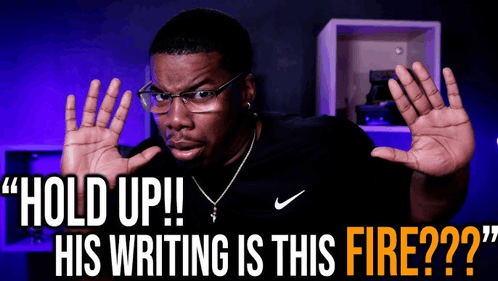
Alcançando a mão para ajudá-lo a se levantar.
"Se não quiser cair morto de frio, recomendo aceitar minha ajuda."
O guerreiro lentamente deixou a espada novamente relaxar em sua bainha, pegando a mão estendida de Úzou para se levantar, pernas tremendo um pouco. Apoiou-se na parede de pedra.
"Te agradeço, semelhante. É um andarilho como eu? Ou vive de caverna em caverna?"
Suas palavras poderiam soar rudes, em uma outra situação, mas era improvável que qualquer um dos dois ligasse para esse tipo de cortesia fingida. Foi direto ao ponto.
Acompanhou o andarilho, o guiando até o canto onde tinha se estabelecido. A fogueira crepitava esquentando o entorno. Ùzou buscou um dos panos que usava para se deitar e colocou na extremidade oposta que estava antes sentado.
"Andarilho, desde que me entendo por gente, por mais que eu já esteja a um bom tempo alojado nesta caverna."
Tateou dentro da mochila por comida, encontrando um saco com alguns suprimentos básicos - pão, frutas da região e um pedaço pequeno de salame defumadosempre achei ele meio vibe vegetariano por algum motivo. O que podia durar no frio. Jogou-o para o outro e então se sentou em cima do saco de dormir, soltando um bocejo.
"Se é que não seja de mal gosto, mas gostaria de saber a quem estou confiando apoio. Tem nome, semelhante?"
Parecia à vontade, soltando o sotaque forte da Língua Materna sobre a linguagem normal em que conversava.
"Não tenho nome. Ou, se outrora tive, já não me lembro mais."
A sinceridade era visível em seu tom, e sentou-se com um baque no pano. Não se importou em tirar a espada da bainha, mesmo que fosse desconfortável deitarvagabundo indo dormir de full armadura e 2 espada na bainha😏😏. Pegou o pão no ar com uma mão, sem encarar Úzou.o que aconteceu com esse pao nunca saberemos
"Me chame do que quiser. Posso te dar essa dádiva, como pequena retribuição pela sua gentileza."
Não perguntou o nome de volta. Se fosse importante, o andarilho dizeria 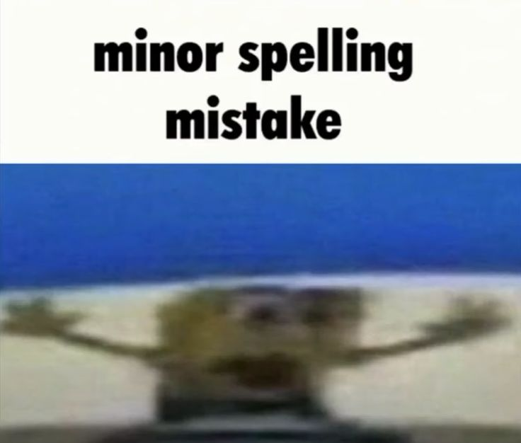
Soltou um sorriso afiado e demorou a pensar, fitando o teto da caverna. Logo voltou a prestar atenção no seu visitante.
"Prazer, então. Me chame de Ùzou. Como me deu a dádiva, vou usar de bom grado. O que acha de Armis? Armis Gladiumele viu um cara de armadura e espada e deu o nome de arma espada."
Soltou uma risada e aproximou as mãos do fogo para esquentá-las. Fitando o cavaleiro, teve coragem de perguntar. Afinal, era mais do que só curioso. Tirou o pano que lhe cobria a maior parte do rosto. Não era diferente do esperado. Tinha uma pele pálida-cinzenta que contrastava com o abismo dos olhos. Seus dentes eram parecidos com a arcada dentária humana, só se diferenciando nos caninos pontudos.
"Sou curioso, então vou ter de perguntar. O que esconde embaixo do capacete, amigo? Olhos medonhos? Não tem do que ter receio."
"Armis Gladium é, então."
Não sabia como se sentia, recebendo um novo nome. Talvez fosse um sinal de uma nova vida, deixando a antiga para trás 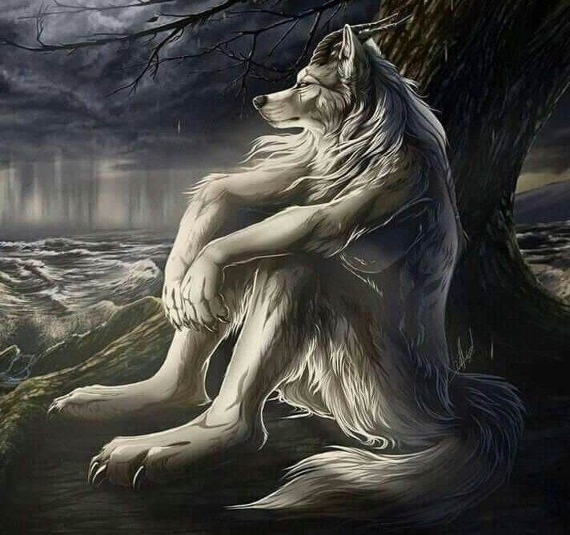
"Não escondo nada."
Iria deixar só nisso, mas aquele semelhante havia salvo sua vida. Levantou as mãos para o capacete, não para tirá-lo, e sim para apontar para um pequeno símbolo encrustado em tinta vermelha. Não parecia tinta, entretanto. Parecia sangue.
"É o que me resta da cavalaria."
Não ofereceu muita explicação, ainda cansado, e deitou-se no pano afinal.
Deixou que o cavaleiro cansado se deitasse enfim. E se deitou no próprio saco de dormir também, fitando o teto até conseguir pegar no sono. Por um lado, estava mais entusiasmado que o normal. Finalmente apareceu alguém. Depois de tanto tempo. Apareceu alguém. 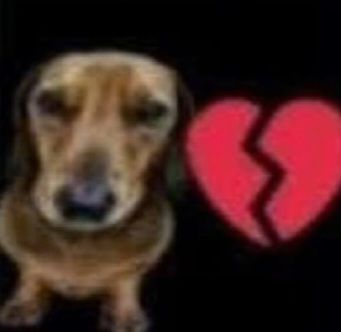
Por outro lado, não sabia do que esperar vindo desse novo alguém. Uma história trágica, um amigo?ou a terceira coisa secreta (namorado) De qualquer modo, os pensamentos lhe consumiram a mente a tal ponto que se cansou e apagou os olhos.
Armis dormiu talvez até no instante que sua cabeça tocara no pano que servia de travesseiro, sem parecer se preocupar na posição desconfortável — de armadura e bainha — em que se deitara.
Caverna, Dia 2
[Uma caverna. Ocupando-a eram dois andarilhos.]
[Dormiam perto da fogueira.]
Úzou demorou tanto para acordar quanto demorou para dormir, se revirando no saco de dormir até bater na parede - quando acordou. Com um grunhido e um estalo de coluna alto, se levantou do sono profundo, abrindo os olhos ainda meio grudados de sono. Se prestou a arrumar as próprias coisas e reacender as chamas da fogueira para esquentar água.
Agora com o cabelo mais longo, recebeu a dádiva de poder prendê-los - o que, para alguém que recentemente tinha encontrado um espelho e finalmente visto a própria aparência, era considerado muito estiloso. Riu baixinho enquanto arrumava a sua própria mochila, pensando alguma bobagem ou piadauma noite com o homem dele e ja esta ovulando. Se espreguiçou e voltou a se sentar perto da fogueira.
Armis acordou só muito depoiscavaleiro mais disciplinado de faspasol. Estava exausto de caminhar e de fome, de miséria e de aflição. Uma boa noite de sono era tudo que precisava. Acordou só quando o sol começou a passar, tímido, pelas fendas da abertura da caverna. Não chegava a alcançá-los, e sumiu logo depois (sol em Faspasol era tão raro quanto achar uma civilização que prosperava), mas foi suficiente. Abriu um olho, e depois o outro, resmungando e levantando o corpo superior.
"Hm...?"
Sua mente demorou-se a voltar para a linha do que acontecera ontem. Fitou Úzou por alguns momentos, confuso.cavaleiro mais alerta de faspasol
"A bela adormecida acordou, é?"
Ùzou estava sentado não tão longe, afiando sua lança - a mesma que tinha conquistado naquele arsenal há alguns anos. Fitou Armis do mesmo modo, dando um risinho nasalputa que pariu ele tá LAÇADO e cumprimentando brevemente com a cabeça. Tinha um copo de café pela metade ao lado da fogueira. Seu rosto era iluminado pelas brasas. De fora, pela fresta, só se via uma espessa nuvem de neve.
Foi levantar as mãos para esfregar os olhos e espantar o sono, e lembrou-se que estava de capacete. Respirou fundo, piscando forçadamente e encarando o teto por alguns segundos.
"Úzou, não é? Bom dia. Então não me matou durante meu sono, afinal."
Se levantou, ou ao menos se endireitou, tomando o café do copo"lembrou-se que estava de capacete" NA MESMA AÇÃO ALIAS . Não tinha certeza que era para ele, mas de qualquer forma, já devia a Úzou bastante, o que era um pouco de cafeína?
"Sim. Bom dia pra você também, semelhante."
Voltou aos próprios afazeres, mais interessado em polir a lança totalmente. Polia com um pano seco, depois de passar um talco por cima da parte afiada. Já tinha usado uma outra pedra para afiá-la totalmente, então já estava finalizando. Era quase possível ver o brilho da lança. E quando Úzou percebeu, deu um sorriso fraquinho. Guardou o que usava organizadamente e foi buscar o seu café. E não encontrou, até as pupilas em chamas se virarem até o cavaleiro e suspirar calmamente.
"Então já temos intimidade suficiente pra compartilhar a mesma xícara de café? 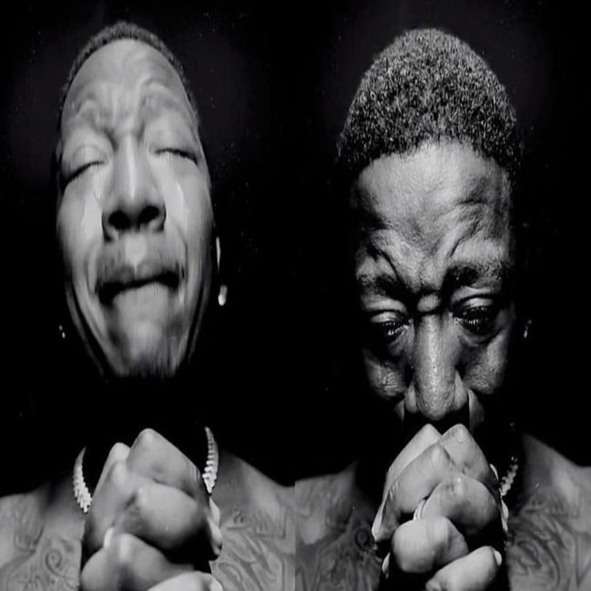
Estendeu a mão para que Armis devolvesse a xícara, e apontou com a cabeça onde estava a xícara dele, aquecida perto da fogueira.
"Desculpa. Estou meio dormindo, ainda 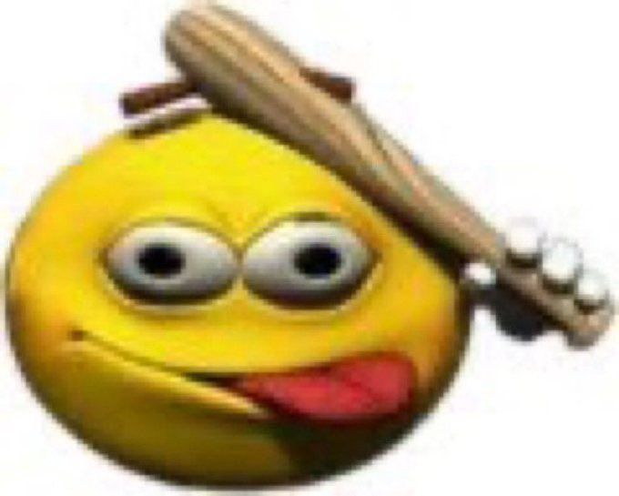
Alcança a xícara para Úzou, esticando-se e ouvindo seus ossos estalarem com satisfação mesmo abaixo da armadura.
"E essa lança aí?"
Pergunta, apoiando seus cotovelos nos joelhos e cruzando suas pernas, um pouco inclinado para frente para fitar a lança. Era brilhante, e afiada. Não podia mentir e dizer que a visão de uma arma nas mãos de um semelhante não fizesse seu coração bater mais rápido, e a mão flutuar até a bainha da espada. Bem, pelo menos isso o acordaria de fato.
"Sem problemas."
Tomou o que restava de café dentro da xícara de qualquer jeito, afinal, não era agora que ia desperdiçar bebida. Voltou seu olhar para a própria lança com a pergunta do cavaleiro.
"Nada com que tenha que se preocupar. Não vou usá-la. Foi um presente de um companheiro de viagem, por isso tenho um cuidado extra com ela. E a sua espada?"
Escorou-a em algum canto perto da mochila, tentativa de mostrar que não a usaria. Se quisesse realmente matá-lo, teria feito sem muito esforço e sem usar arma qualquer.
"Minha desde que eu nasci, talvez mais. Se chama Aegis."
Irônico, talvez, que sua espada tinha nome e ele não. Deu de ombros para o próprio pensamento, deslizando um pouco da lâmina fora da bainha. Conseguia ver seu próprio reflexo na prata.
"Não tive tempo, ou energia, de lhe perguntar ontem, mas o que te leva a fazer isso? A me acolher, quero dizer. Vejo poucas coisas que posso lhe oferecer das quais eu estaria disposto a fazer, ou vantagens a se ganhar, e consigo contar com uma mão andarilhos e semelhantes que faziam coisas na selvageria de Faspasol somente por ter um bom coraçãoa grande frase de 5 frases do cavaleiro analfabeto."
"Interessante."
Ouviu atentamente ao que falava, olhando para o lado e respirando fundo antes de responder. Sentou-se em cima de um acolchoado antes de começar a falar.
"Disse que tinha uma cavalaria, então não sei se entende o que quero dizer, mas pode ser muito solitário ficar em Faspasol totalmente sozinho. Talvez, ontem à noite, quando vi um semelhante chegando à caverna, tenha me sentido muito aliviado, na verdade 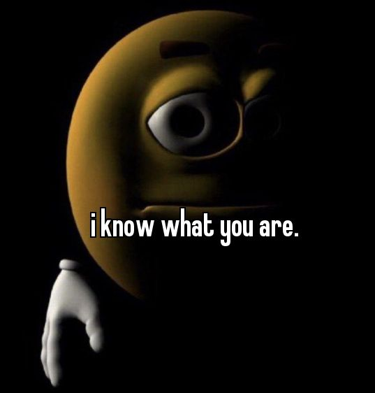
Suspirou, passando as mãos quentes no rosto em tentativa de aliviar o frio de suas bochechas.
"Não espero receber nada em troca. O tratei como gostaria que me tratassem se estivesse na mesma condição. Surpreendente de verdade, mas acho que tenho bom coração."
"Hm."
Resmungou para demonstrar que ouvia, se levantando por inteiro dessa vez. Esticou seu braço, ouvindo o osso estalar, suas botas de metal tilindo contra o chão de pedra conforme andava até Úzou.
"Isso é raro de se ver, especialmente em andarilhos. Um companheiro de viagem, você diz?"
Armis pensou. Ele realmente pensou sobre isso. Não tinha nada para fazer, nenhum lugar para ir. Passara a vida inteira com um único fardo, único objetivo de ser um cavaleiro, e agora isso fora arrancado de si. Estava no significado da palavra de ser sem rumo. Céus, nem um nome ele tinha. Um companheiro de viagem significava uma nova vidan tanko ele falando como se fosse se casar (e vai). Significava ter algo para lutar novamente, e dessa vez não falharia.
"Não sei. Que tipo de viagens você viaja, de qualquer forma? Suponho que seja difícil ir longe com só uma lança, não importa o quão afiada."
Seus olhos procuraram encontrar algum olhar dentro do capacete da armadura, atônito ao ouvir as palavras que saíam de sua boca.
"Difícil explicar, mas não é só a lança que tenho... É mais como se eu fosse um feiticeiromenino bruuxooooo. Se quiser ver, acho que consigo te mostrar. Mas estou meio enferrujado. Enfim."
Soltou um sorriso, mas logo voltou aos pensamentos.
"Eu viajo em busca de neutralizar ameaças maiores. Como Eternus ou outras criaturas que habitam, em sua maioria, as profundezas. Reúno recompensas e compro suprimentos com elas. Meu objetivo atual na verdade... é tentar ir até algum lugar com clima um pouco melhor."
"Não entendi a maioria do que você disse."
Riu, se sentando ao lado de Úzou com as pernas cruzadas.
"Acho que essa é a desvantagem de crescer em guerra. É só dela que eu conheço. Só concordo com a parte de um clima melhor! Neve e neve, faz décadas que não vejo um dia ensolarado."
Era um exagero, talvez, mas qualquer habitante de Faspasol entenderia o que queria dizer. Apoiou seu queixo — o queixo do capacete de metal, nesse caso — na mão, pensando.
Não sabia se valeria a pena. Como dissera, só conhecia de uma coisa, sua vida inteira. Era resumido só a sua armadura, nada além disso. Sua armadura tinha um nomeQUE NOME, sua espada tinha um nome, e ele não tinha nenhum. Era um cavaleiro, para servir e proteger eternamente. Agora não havia nada mais para proteger 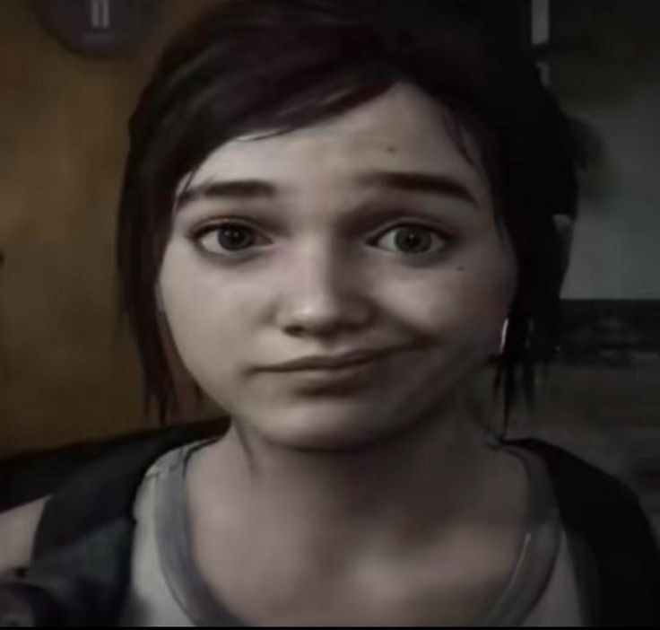
Riu junto ao vê-lo se aproximar. Esqueceu como era sentir outro semelhante por perto 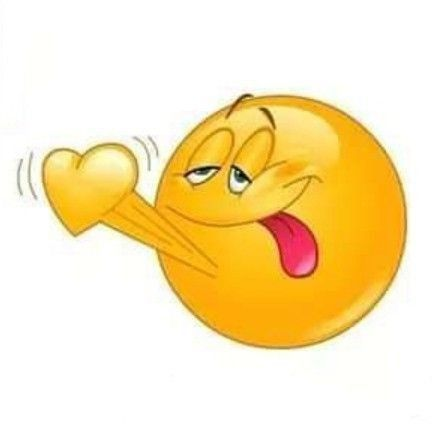
Seu olhar voltou-se para a pose que Armis fazia, dando uma risada. Alguém tão grande parecendo se abrir tão facilmente era difícil de se ver. Estava finalmente ficando um pouco mais curioso, afinal.
"Posso te contar tudo que sei desse lugar.... Em troca... Precisa me contar da onde veio."
Apoiou o queixo na mão também, imitando-o. Seu olhar afiado pareceu se afrouxar um pouco.
"Bem, sou de Faspasol, mas disso tu já sabia."
Suspirou, olhando um pouco para cima, para o teto da caverna. Era bonito. Não vira muitas cavernas em seu tempo de vida. Não era para ter estalagmites lá, ou morcegos? Nãovia nada.
"De longe. De uma civilização, um reino. Raro, muito rarogente nao era um reino comum era raro, muito raro. Como todos os outros, não durou muito tempo."
Respondia devagar e hesitante, como se pesasse cada palavra. No final, suspirou mais uma vez, indo coçar a nuca até perceber que estava coberta de armadurao cara que supostamente ta de armadura 24/7 btw. Fingiu que ia ajeitar o capacete para disfarçar.
"E você?"
"Provavelmente não deve nem saber do que se trata, mas venho da colônia subterrânea leste. Ficava dentro de uma sinuosa montanha, até ser atacada pela colônia oeste."
Contou com pesar na voz, no final olhando para o teto para ver o que o cavaleiro buscava lá em cima. Se inclinou um pouco para buscar uma capa de lã e couro que tinha guardada, pondo-a ao redor dos próprios ombros.
"Se estiver com frio tenho mais guardadas. Mas, enfim, o que quer saber? Sobre Faspasol, Eternus, meus poderes, viagens?"
"Seus poderes."
Era uma resposta franca e curta. Voltou a fitar a frente, mas era tão entediante como acima. Achara que cavernas fossem ser mais interessantes. Nãovia nenhum cristal. Deixou sua mão que apoiava a cabeça apoiada no joelho, bocejando por dentro do capacete.
"Ah.. Vê meus olhos?vou ser honesta eu ainda nao faço a minima ideia de como o poder do uzou funciona, eu acho que é só o plot device Demorou bastante para eu perceber, mas se trata de uma herança de família. Graças a eles eu consigo ver através de paredes, por exemplo. Entender sentimentos de outros semelhantes ou descobrir algum segredo. Mas não se preocupe, de verdade. É raro quando eu consigo 'ler' pensamentos a partir dos meus olhos. Uso só pra descobrir coisas do mundo físico."
Suspirou e apontou para as pupilas em chamas enquanto explicava. Arregalou um dos olhos e fez graça, aumentando e diminuindo as chamas, rindo baixo em seguida. Demorou a falar novamente, pensativo.
"E tem o segundo. A Língua Materna. Esse é difícil de controlar, mas é a maneira mais fácil para exterminar criaturas ou Eternus. É, basicamente... Posso entrar na mente dos outros. Com um pouco de esforço, é claro. Posso usar para bem e mal. É divertido. Se me permitir, posso te demonstrar alguma coisinha."
O tom pareceu meio sádico por um instante 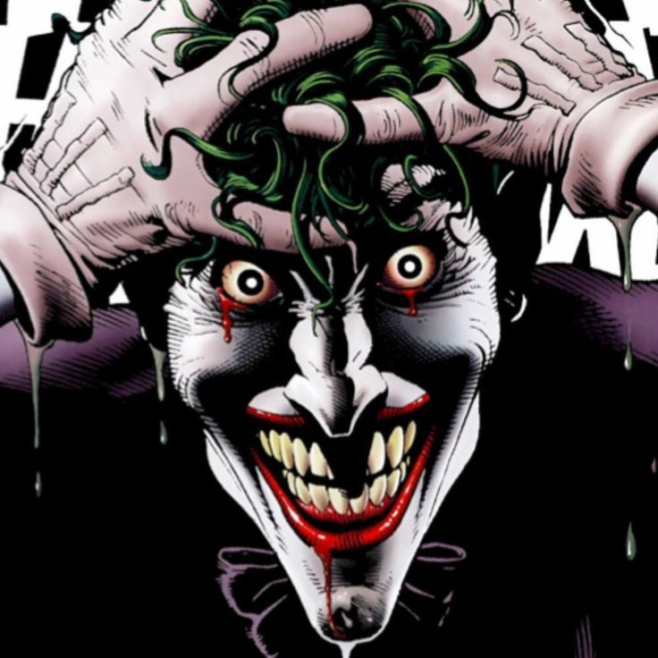
"Vá em frente."
Armis observava os olhos de Úzou com interesse, dando de ombros. Nunca tinha visto algo como isso, e olha que tinha visto muitas coisas. Acerca a tinha quase certeza que alguém em sua terra natalfaspasol?? sim, o ÚZOU falava isso. Ou era outra? Eram tantas línguas, que lhe confundiam. Sobre o pedido, não tinha muito medo. Se seu semelhante fosse lhe machucar, não pediria permissãoBARS.
Ùzou se aproximou sem dizer uma palavra, pondo as duas mãos ao lado do capacete de Armis, unicamente para sustentação, porque sabia que, com a guarda baixa que estava, provavelmente desmaiaria quando entrasse em sua mente.
E o fez. Olhou-o profundamente pela fresta da armadura, procurando seus olhos, e as chamas presas entre seus olhos negros se acenderam numa explosão. Ùzou pôde sentir o corpo de Armis ficando mole.
Tudo era parecido com um sonho, na perspectiva de Armis. Na de Ùzou, era um labirinto. Como seu objetivo não era machucá-lo, entrou em sua mente de modo inofensivo, igualmente perdido. Para Armis, era como se alguém estivesse o mostrando um programa de televisão. Poderia ver Ùzou descobrindo corredores e tateando as dobras de sua mente, encontrando memórias intocadas. Quando encontrou as memórias, agora nítidas, de quando Armis encontrou Ùzou na caverna, deu um sorrisoVIADO e a tela apagou. A única visão de Armis era Úzou com os olhos totalmente negros, também recobrando consciência, e segurando-o para não cair. O corpo de Armis estava mole, já Úzou parecia uma muralha de tão estático. Demorou alguns instantes até que voltasse, soltando um suspiro aliviado.
"..."
Piscou algumas vezes, tossindo. Bom, aquilo certamente foi uma experiência nova. Balançou a cabeça como se para organizar os pensamentos espalhados novamente, e olhou para Úzou, segurando seu antebraçoVIADO TB para não deixá-lo cambalear e cair.
"Uau. Cê... só pode fazer isso? Com qualquer pessoa?"
Se estabilizou, dando um sorriso orgulhoso de si mesmo por usar a própria habilidade. Por um momento estranhou o toque de Armis. Soltou um suspiro de satisfação 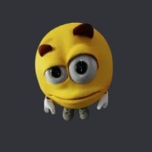
"Posso enlouquecer qualquer um, com um pouco de esforço... Mas não se preocupe, ok?achei fofo Não faço aleatoriamente. Como é a sensação?"
"Estranho. Como se estivesse fora de mim, sabe? Num sonho."
Estremeceu, mas não era medo, só um arrepio geral. Tinha passado por algo semelhante muito tempo atrás. Como se alguém tivesse entrado em sua mente, tivesse posse de sua consciência; mas essa parecia diferente. Não era tanto uma invasão, mais uma caminhada por sua cabeça.
"Por isso que extermina ameaças, então? Jogando-as na loucura e então finalizando-as com a lança?"
"É. Basicamente isso. Às vezes troco a ordemnosso pequeno comediante (eu ri)."
Se desvencilhou agora, com medo de estar violando seu espaço. Voltou a se sentar ao lado de Armis, apenas encostando o próprio ombro no dele.
"É, pelo que tenho conhecimento, a única forma de matar Eternusnao consigo nao ler eternatus. Aqueles que conquistaram a imortalidade e perderam o próprio rumo, se tornando uma ameaça a todos que encontram. Enfim... O que que mais quer saber?"
"Hm. Sobre você. Úzouarmis atacante."
Gesticulava brevemente com a cabeça, como se apontasse para Úzou para especificar que era ele mesmo. Deixou seus cotovelos apoiados nos joelhos, mãos largadas e olhos fitando as chamas nos de Úzou através dos riscos em seu capacete.
"Tá mesmo tão interessado em mim?"
Soltou um sorrisinho de canto, tirando sarro.
"Fugi da minha colônia para escapar do ataque da colônia oeste. Vai fazer quatro anos que vivo como nômade dentro desse deserto ártico. Já exterminei aproximadamente 30 Eternus e outras criaturas maiores nesse tempo. Gosto de sopa de cenoura subterrânea e dormir é minha maior paixão 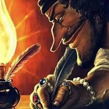
Copiou sua pose e igualmente fitou a fendaFENDA onde deveriam estar seus olhos.*
"Tenho 2 decafísme da um decafeinado tb e meio. Falo Valiriano e a Língua Materna fluentemente. Quer ouvir?"
"Vá em frente."
Diz mais uma vez, com um sorrisinho de canto escondido por seu capacetearmis debaixo do capacete e a cabeça inclinada. Quase certeza que já ouvira Língua Materna em alguma horamano eu to insistindo tanto nesse ngc de lingua materna sendo familiar q eu acho q eu tinha alguma lore na cabeça, mas não sabia por exato. Voltou a fitar a caverna. Se fosse continuar ali, teria que decorá-la em algum momentonao estara beating a cabeça vazia housewife 0 pensamenos allegations; parecia tão morta.
"Volo ut videamus faciem vestram."tradução: quero ver seu rosto.
O silêncio após falar foi deixado por aberto, Ùzou o olhando como se esperasse alguma resposta esclarecedora. Falar na sua língua o deixava mais vulnerável. Olhou para as próprias mãos, mexendo os dedos para passar o tempo. Coçou a nuca com vergonha antes de falar de novo.
"Arma habes valida."tradução: Você tem braços fortes.
"Claro, claro, sim, entendi."
Bobeava, fingindo que acabara de entender sequer uma palavra que Úzou falara. Não fazia ideia, mams ele parecia envergonhado, então deu uma tapinha em suas costas com uma risada.
"Nossa, viu. Não sei como vocês magos fazem isso."
"Hum-hum."
Olhou para as próprias mãos, mexendo os dedões e esquentando a palma da mão. Demorou a falar de novo, mas quando o fez, deu uma risadinha nasal e encarou Armis.
"Sua vez. Me conte sobre você. Armis."
Se ajeitou de onde sentara, pigarreando.
"Hmm... bem, você já sabe da maioria. Me chamo Armis, Armis... Gladius, não é? Sou do sul, perto do mar, onde existia uma grupo grande que visava conquistar e batalhar o resto do continente inteiro. Nasci lá, cresci lá, e alguns meses atrás, falhamos. Fomos derrotados. Dali pra cá, me tornei um andarilho."
Chacoalhou a cabeça com uma risada sem humor. Parou de falar por alguns segundos, expirando fundo. Não fitava Úzou.
"Não tenho certeza de quantos decafís tenho. Menos de três, com certeza. Falo Valiriano e a língua das bestas. De resto... Sei lutar, sei matar, e o mais perto que chego de ser mágico é saber utilizar o Sangue. Runas, rituais, sacrifícios. Blasfêmia, no geral."
"Língua das bestas?"
Ùzou escutara tudo com os olhos bem focados e ouvidos abertos, realmente curioso. Eventualmente tateava um dos chifres como hábito, enquanto o ouvia. Armis vinha de um lugar muito diferente que ele. Provavelmente sabia de coisas sobre a guerra que Úzou não tinha a mínima noção do que eram. Seu único contato com a guerra foi no ataque a sua colônia. Atualmente no deserto ártico era difícil ver sequer alguma civilização, quem dera duas guerreando. Seria útil tê-lo como companheiro. Sabia lutar. Sabia matar. Úzou também sabia, mas o físico não era seu forte. Resolveria também o problema da falta de companhiaesse uzou quer pica e n ta sabendo como pedir.
Deu um risinho quando ouviu o comentário sobre blasfêmia. Gostou. Poderia aprender uma ou duas coisas sobre com Armis. Inclinou a cabeça um pouco, tentando enxergar a fenda da entrada da caverna. A nevasca estava se acalmando. Se questionou sobre a condição física do semelhante. Já estava bem?
"Língua das bestas, é. Tipo, dos demônios. Existem demônios? Não sei. Também não sei se existe uma língua delescavaleiro mais sabido de faspasol. É jeito de falar."
Dá de ombros, se inclinando para trás para apoiar as costas na parede de pedra.
"Não sei muito bem o significado, tem aver com tudo isso de ritual de sangue e esses treco."
"Entendi, entendipois eu n.. finge q eu dei uma explicacao um pouco melhor pq Língua das Bestas soa aura."
Copiou e também se recostou na parede. Demorou a falar algo, encarando o teto. Deixou as mãos leves, uma apoiada na coxa e outra largada ao redor do corpo. Cantarolava alguma coisa qualquer enquanto esperava algo vir á mente. O eco ressoava na caverna.
"Armis. Me mostra seu rosto?"
Soava como um pedido sincero.
Armis não falava nada, ainda em silêncio. Parecia pensante, olhando na vaga direção do teto. Não sabia como responder; na verdade, não sabia o que fazer. O capacete era o símbolo da cavalaria, era um símbolo de onde ele viera. Tirá-lo seria trair seu valor. Mas, novamente, que valor tinha? Não era como se a cavalaria existisse mais, de qualquer forma. Respirou fundo. Para seu Império, Armis não era nada além de uma armadura brilhante e uma espada afiada. Era isso que fora toda sua vida. Sua presença se caracterizava pelo capacete, pela voz metálica e pela impiedade em matar. Nada além disso.
Levantou seus braços, alcançando na direção de seu pescoço. Enroscou as mãos abaixo do início do capacete, respirando o ar abafado ali dentro pela última vez antes de puxá-la para fora, desfazando as tiras que a prendiam nele. Abaixou as mãos, deixando o capacete descansar com gentileza no chão, e balançou a cabeça. Fazia um tempo que não sentia o ar fresco desse jeito. Inspirou com força, exalando com sua boca e virando o rosto para fitar Úzou. Ofereceu um sorriso fraco, nervoso, e agora visivelmente torto.
"Muito melhor te ver sem metal no caminho."
Sua voz era muito mais clara agora, e um pouco ofegante. Seu cabelo negro e raspado grudava na pele branca e avermelhada, e ele trouxe o antebraço para limpar a testa suada; normalmente não se preocupava com o quão quente ficava dentro do capacete, vivia em Faspasol afinal, mas sentar-se perto da fogueira era uma das poucas exceções (e talvez o nervosismo de tirar o capacete tivesse tido seu efeito. Só talvez). Trazia uma feição tão humana quanto se podia ter: sobrancelhas finas e curvadas, nariz arredondado e uma boca pequena e torta. Era um rosto afiado, mais ainda em sua mandíbula, com cicatrizes velhas e às vezes imperceptíveis aqui e ali. Abaixo de seu nariz crescia um bigode raspado e uma barba à fazer. Em sua defesa, não teve muito tempo para depilar nos meses que se seguiram a ruína do Império.
Do mesmo jeito que parecia humana, também tinha algo de errado. Suas pupilas eram pequenas e predatórias de mais para ser normal, suas orelhas só um pouquinho pontudas comparadas ao humano, os dentes um pouquinho mais afiados do que precisavam ser. Retalhos de couro escondiam seu pescoço, e Armis levantou a mão para desfazê-los, deixando-os cair no chão sem preocupação nenhuma; sabia amarrá-los de volta de olhos fechados e tonto.
O homem pegou o capacete novamente, virando-o na lateral com o mesmo cuidado que uma mãe teria com seu filho recém-nascido, passando o dedo por cima de um símbolo escuro. Quando sua pele o encostou, começou a brilhar de vermelho vibrante, como se pedisse por atenção. Para olhos alheios, pareciam riscos sem sentindo se sobrepondo em triângulos e pontos arbritários.
"Isso aqui é uma runa de sangue."
Explicou, quase sussurrando, sem prestar muita atenção no que falava, seu coração batendo forte. Com um último suspiro, levou seu dedo na frente do símbolo novamente, cobrindo-o e apertando. Fechou os olhos com força, como se o que fizesse doesse ou pedisse por esforço demais.
O que aconteceu a seguir não foi em um piscar de olhos, mas também não foi visível. Era como se já estivesse lá, mas só agora fosse perceptível. Chifres. Chifres listrados e negros, surgindo do meio de seu cabelo e se curvando para trás e para cima. Da base de seu pescoço, apareceram escamas irregulares da mesma cor. Diminuíam e frequência e não chegavam ao rosto, visíveis somente nas articulações e artérias.
Abriu os olhos devagar novamente. Havia esquecido o quão bom era, sem capacete, sem o prender da Runa. Retirou as manoplas de metais de suas mãos também, deixando só as luvas de couro, e ergueu o olhar até Úzou com um sorriso nervoso de canto.
Úzou observou cada movimento que Armis fazia. O desenrolar das cordas, quando limpara o suor com o antebraço. Seus olhos negros entrando em combustão no momento que pode ouvir sua voz sem ser por uma superfície metálica. Se aproximou, não tirando os olhos dele. Fazia realmente muito tempo que nãovia uma pessoa. Não esboçava feição a não ser uma cara surpresa. Com cuidado, aproximou a mão aquecida da fogueira até seu rosto. Passou os dedos sobre a pele de sua bochecha e então tateou seus chifres, examinando as listras sobrepostas. Tudo parecia muito curioso para Úzou. Agora finalmente conseguia enxergar quem era Armis. Provavelmente a runa que estava o impedindo de ver através da armadura. Quando Úzou examinara as escamas de seu pescoço com as finas garras dos dedos e percebeu que estava perto demais - de joelhos, quase se apoiando em cima do semelhante. E então se distanciou, se sentando ao lado de novo. Ofereceu um sorriso torto igualmente.
"Pulchra. Pulcherrima.tradução: Eu sou gay."
Deixou o capacete novamente no chão, congelado enquanto Úzou se aproximava. Não de medo, talvez de curiosidade, incredulidade. Acompanhou com seus olhos seus movimentos analisando-o, e sorriu novamente, bobeando-se.
"Tanto tempo assim que 'tá sozinho?"
Quando Úzou se afasta, coloca sua mão onde ele havia tocado, como se o sentisse aindanem preciso dizer nada. Desviou o olhar para o chão, ainda meio nervoso.
"Fala Valiriano, estrangeiro filho da puta."
Ri consigo mesmo. Era uma piada do sul de Faspasol, talvez Úzou entendesse, talvez não. Estava alegre demais para se importar. Se sentia leve, real, sem sua armadura. Aproveitou e começou a desfazer os nós dos ombros e do peitoral.
"Ei."
Riu também. Ignorou a pergunta de antes, talvez por ego, talvez por teimosia. Ainda estava meio inquieto por conta da vergonha, então foi buscar alguma coisa para fazer. Tateou dentro da mochila mais uma capa para Armis, chamando-o com um resmungo para pegá-la. Se voltou até a mochila e agarrou um saco de comida. Pão, salame defumado e café. Pôs na frente do semelhante e deixou que fizesse a própria comida.
"Eu... volto logo."
Pôs a toca sobre a cabeça e calçou as botas de couro e lã, saindo da entrada da caverna. Não avisou o porque, mas provavelmente ao banheiro ou coisa parecida.
Tinha sua própria capa, mas tinha usado como travesseiro lá na cama, então aceitou a de Úzou de bom grado. Mordiscou o pão algumas vezes, mas estava mais ocupado em tirar o restante da armadura. Acenou com a fala do semelhante, tentando pensar o porque que ele agia tão estranho 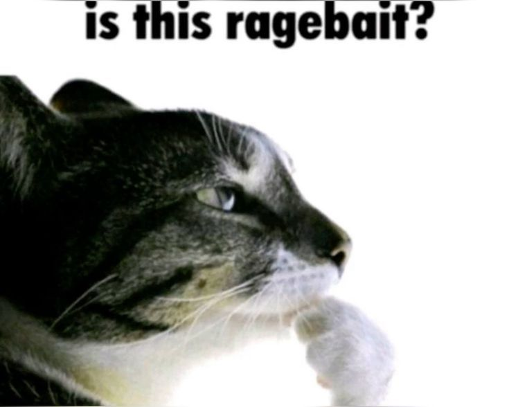
Tinha só vestes de lã e couro abaixo, talvez malha na barriga, não se lembrava direito. Droga. Duvidava que as roupas do semelhante servissem nele, visto a diferença gritante de tamanho.
Anteriormente, vigiar de armadura e capacete sempre não parecia uma ideia tão ruim. Agora, era horrível. Tinha um companheiro de viagem, afinal.
Caverna, Noite 2
[Escurecia. O vento frio uivava fora da caverna.]
Ùzou demorou a voltar. Já estava escurecendo quando pode se ouvir o barulho dele se espremendo entre a fenda para chegar, levando um pouco de neve até a entrada. Tinha percorrido um atalho até o comerciante, que não ficava tão longe. Um dos motivos para ter se instalado naquela caverna especifíca Embora não fosse tão "longe", o longe considerado de Faspasol é mais de 1 dia de viagem.
Chegou com um amontoado de roupas em mãos, grandes demais para si mesmo, então só poderiam ser para Armis. Agasalhos que durariam o suficiente para uma boa estadia e um saco de dormir que barganhou para comprar do menor preço.
"São pra você."
Alcançou as roupas para Armis e se sentou perto da fogueira novamente, usando o saco de dormir para se deitar. Seus cabelos tinham pedaços de neve presos, seus olhos estavam marejados e o nariz consideravelmente azul de frio. Parecia inofensivo e congelado. Cansado.
A armadura de Asmirquem caralhos é asmir jazia arrumada no canto da caverna, apoiada na parede. Apenas seu capacete que dava tratamento especial, deixando-o do lado de onde dormira, de pé e junto ao pano. Estava vestido somente com uma camisa e calça de lã e retalhos de couro em seu cobrindo seu braços, mãos e pés estava descalço. Em suas mãos carregava sua espada de duas mãos, Aegis, e no momento estava afiando-a sentado em sua pequena caminha, com somente a sua capa azul de cobertor.
Ergueu os olhos quando viu Úzou finalmente retornar. Estava acostumado com jornadas demoradas, passando meses sem ver um cavaleiro quando esse ia buscar alguma coisa ou fazer uma tarefa, mas mesmo assim não deixou de resmungar um 'tava na hora' e se levantar para ver o que ele trazia, deixando Aegis ao seu lado.
"...!"
Suas sobrancelhas se ergueram em uníssono quando viu as roupas que o seu semelhante trazia. Não pôde impedir o sorriso que cresceu em sua face, uma risadinha incrédula. Tateou a textura delas, e o tamanho. Não o serviam exatamente, mas não importava.
Seus olhos acompanharam o movimento de Úzou, até a cama. Tirou sua capa azul dos ombros e deixou-as sobre o saco de dormir delemamae armis. Não que fosse ajudar, mas, bem, quando criança, sempre suspeitou que aquelas capas tinham alguma capacidade curativa, já que sempre que ficava doente, dormia com a capa e acordava bem novamente.
"Quer chá? Sei fazer o melhor que jamais vai tomar. E ajuda com frio."
Pergunta ainda com um sorrisinho de canto no rosto, juntando uma xícara e tirando os restos de café de lá. Aproveitou para deixar Aegis do lado de seu capacete, e não largada no chão por aí. Tinha feito a mesma coisa com a lança de Úzou quando ele estava fora.
Úzou tinha adormecido. Dormia profundamente. Era bonito quando dormiadetalhe extremamente relevante. Sua feição ficava delicada e pacífica. A pele pálida era acalorada e tingida pelas brasas da fogueira.
Acordou só quando ouviu a pergunta de Armis, levantando-se com um susto e com os cabelos desgrenhados. Coçou os olhos para sentar de volta em cima do saco de dormir e esperar seu chá.
"Quero."
Acenou com a cabeça mesmo que Úzou provavelmente não fosse ver, olhando em volta por alguns segundos como se pensasse no que fazer agora. Ah, é. Onde encontraria ervas por ali? Pulou por cima de seu saco de dormir na direção de sua armadura, ajoelhando-se para procurar e buscando alguma coisa entre as placas de metal.
Tirou sua mão carregando algumas folhas que não pareciam ter nada em especial além de sua textura enganosamente espinhosa. Pegou a xícara e tirou os resquícios de café (usando o método sábio de transferi-los até seu estômago), botando água ao invés disso e segurando por cima da fogueira. Pausou por alguns segundos. A xícara não iria derreter, não é?pqp Certamente era de pedra. Olhou na direção de Úzou, mas decidiu não perguntar. Descobriria logo logo.
Com sua outra mão, rolou as folhas no chão até só sobrar a pequena raíz invísivel que fluia do começo até o topo da folha. Colocou na xícara com cuidado. Não tinha certeza se era as raízes ou as folhas espremidas antes. Droga, porque não escrevera as instruções em algum lugar?
Colocou o suco das folhas logo depois, usando seu dedo (felizmente protegido por sua luva de couro) para girar a misturar. Esperou aquecer um pouco mais, e tomou um gole experimental. Era um método... inconvencional de fazer chá, mas com sorte suficiente, daria certo. Tinha um gosto doce e suave, e parecia aquecer seu corpo do topo da cabeça até os dedos do pé em uma sensação morna e agradável. Sorriu, tocando o ombro de Úzou para acordá-lo e alcançar a xícara.
"Aqui, princesapercebi agr eles sao bem o duo principe e cavaleiro ne (uzou eh o cavaleiro)."
Diz com irônia sem nenhum insulto atrás das palavras.
Ùzou tinha de fato adormecido, mesmo tendo tentado não fazê-lo. Eventualmente acordava para ver embaçado a imagem de Armis fazendo o chá, piscando lento e então dormindo de novo.
"Obrigadalevou tao a serio ser chamado de princesa q virou mulher."
Acordou de susto para pegar o chá, e esperou Armis se virar para puxá-lo por uma das mãos e derrubá-lo. Ùzou era menor, mas era forte o suficiente. Deu um sorriso de canto. Não calculou direito, então Armis provavelmente iria cair em cima dele. Pelo menos teve vingança.
Armis estava se levantado, pronto para praticar um pouco mais com a espada e talvez experimentar as roupas e sair testar a montanha. Não estava pensando muito em Úzou e o que ele faria, só para observar sua reação ao chá que fizera. Leia-se, foi pego completamente de supresa. Soltou uma exclamação quando sentiu um puxão, perdendo o equilíbrio inteiro e caindo em cima de seu semelhante.
"!!"
Ele era pesado, e grande; por pouco não acertara o cotovelo direito na cabeça de Úzou. Apoiou as mãos nos ombros do semelhante para levantar-se, soltando uma risadinha incrédula.
"Seu...! Podia ter derramado o chá!"
Limpou a poeira de seus ombros, balançando a cabeça como quem está decepcionado, com o mesmo sorriso torto e de canto que já lhe era padrão.
Ùzou riu, não se importando com o peso que caiu sobre si. Procurou o olhar (🥺) de Armis 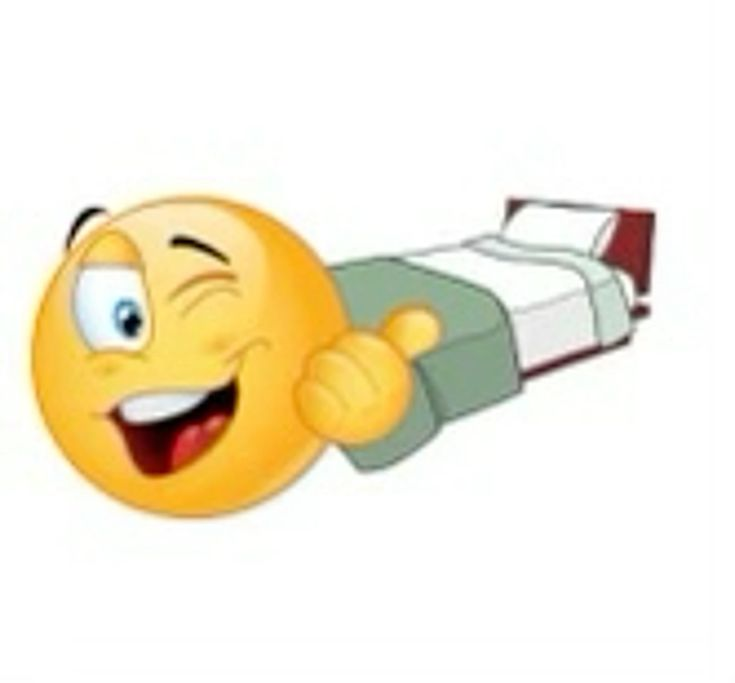
"Tá... muito bom! É docinho."
Quando terminou, deitou-se novamente. Mas dessa vez sem sono, só observando o quer que o semelhante fazia. Tinha um livro que estava lendo há um tempo e muito bem poderia pegá-lo agora, mas era mais interessante analisar seu comoanheiro discretamente. As chamas de suas pupilas acenderam. O que Armis estava pensando? Sentindo? Deveria de pensar de modo diferente, obviamente. Deveria? Ùzou escorou o rosto na mão, onde escorava o cotovelo no chão.
"Que bom que gostou."
Acenava com a cabeça mais uma vez. Era quase um costume seu, vindo de quando outros não podiam olhar no seu rosto para definir se concordava ou não. Se virou, voltando para onde deixara as roupas e erguendo uma porção delas. Inclinou a cabeça, torcendo o lábio como quem pensa. Preciso de alguma coisa quente se for sair, pensava, e testou a vestimenta. Era um pouco grande demais, mas daria pro gasto. Vestiu as botas também, sem colocar meias>ihhh o chule.
Sem sair do lugar onde estava, estendeu sua mão para pegar a espada e o capacete onde deixara escorado nas paredes. Nisso, viu de canto de olho Úzou, sentado o observando. Virou a cabeça para encará-lo com indignação fingida, botando as mãos na cinturaestilo mae desapontada.
"Oxiseria legal se a gente localizasse o sotaque deles ne? tipo, os personagem de faspasol falando diferente dos do sul, e nao só os dois falando igual a gente fala, não ia ir dormir não?"
"Já vouuu. Queria ver se as roupas serviam. Gostou?"
Bocejou, dando um sorrisinho e voltando a se deitar de verdade. Demorou um pouco para voltar a ficar sonolento, se movendo de um lado para o outro.
"São ótimas."
Responde brevemente, retribuindo o sorriso bobo. Se levanta finalmente, pegando o capacete e as tiras de couro com uma mão.
"Vou dar uma olhada lá fora."
Passa o dedo novamente pela runa na lateral do metal, que começava a brilhar. Pressiona com força, respirando fundo, e quando abriu os olhos era como se os chifreseu vivo esquecendo que ele sequer tinha chifre mn q bizarrice nunca tivessem existido para começo de conversa, nem as escamas. Amarrou as tiras de couro em seu pescoço e colocou o capacete por cima, virando-se para fitar Úzou através da fenda.
"Vá com cuidado."
Ùzou deu um último olhar de concordância, afirmando com a cabeça. Depois se deitou novamente, cobrindo o corpo inteiro com o cobertor. Não deve ter demorado a dormir.
"Com certeza,"
Confirmou, mais para reassegurar Úzou. Esperou até que ele adormecesse, fitando a entrada da caverna, até que pegasse sua Aegis (sua espada) com uma mão e saísse. Não estava vestindo toda a armadura, só o capacete, mas demoraria demais e as tiras de couro se certificariam que não caíria.
Suas botas não deixavam nenhuma neve entrar, apesar de estar sem meia, e pisou ligeiro e leve, coisa que se desacostumara a fazer com armadura pesada. Olhava em volta no escuro com cuidado, atento para qualquer barulho além do esmagar de neve, enquanto seguia a parede da montanha com a espada na mão.
Deserto Gélido, Noite 2
[A neve se estendia até onde o olho poderia ver.]
[Era uma noite rotineira.]
A noite no ártico de Faspasol demorava bastante - 2/3 de um dia. O cenário que se pode ver e ouvir no deserto gélido é somente uma espessa camada de neve fofa e fatalmente fria. A ausência de qualquer outra iluminação além da lua permite que o céu estrelado possa ser visto nitidamente - provavelmente a única parte realmente bonita. É necessária uma visão apurada para perceber os detalhes do caminho gelado. As paredes da montanha são ásperas e incontavelmente perigosas. Deslizamentos de neve são comuns após nevascasjura.
Armis, com dificuldade, poderia ouvir só o sussurro do vento metalizado. Já não nevava mais, evento raro por si só. A noite estava no máximo de tranquilidade possível. Tinham se passado alguns minutos até que algo pudesse realmente cativar sua atenção. Uma lebre. Uma lebre grande e felpuda, de olhos negros grandes e fofos. Estava parada há poucos metros á frente, estática. Mais ao longe, começava a vegetação. Pinheiros enormes, sinuosos em seus galhos e curvatura. Moldados por neve e imensos o bastante para assustar o maior dos cavaleiros.
A lebre começou a ir na direção de Armis, inofensiva.
Armis não era nenhum caçador, e nunca fora. Vivera matando em combates um contra um, e, sim, tivera jornadas que precisara caçar animais silvestres no silêncio para sobreviver - como qualquer cidadão de Faspasol - mas podia contar essas ocasiões com suas mãos. Quando ouviu um coelho, se virou com destreza, segurando o ar no pulmão como se qualquer respiração, pequena que fosse, iria espantar o animal. Havia algo esquisito, entretanto. A lebre branca se disfarçava na neve, mas... parecia estar indo em sua direção.
Deslizou um pouco da espada para fora da bainha, o ato fazendo um som ríspido e afiado de metal contra metal. Não tudo, somente o suficiente para que pudesse tirá-la em um piscar de olhos, deixando sua mão esquerdatenho a sensacao q troco toda hora se ele é canhoto ou destro descansando em cima do cabo, seus olhos focados na lebre. Não sabia o motivo de tanta paranoia, mas era necessário para sua sobrevivência. E, de qualquer forma, não tinha arco para caçar, e Aegis nunca o perdoaria se fosse jogá-la.
A lebre pulou na direção de Armis, agora há no máximo um metro de distância do cavaleiro. A penumbra lhe caiu ao rosto. Agora de perto, era possível enxergar claramente. Aquilo não era uma lebre. Tinha tudo para ser uma; o pelo fofo, branco. O formato e o pequeno rabo. Mas não era - talvez fossem seus olhos. Sempre foram tão grandes e esbugalhados? Talvez fossem as patas, grossas e grandes. O formato das orelhas sempre foi tão... Pontudo?
A lebre parou, virando sua cara de lado. Seu olho esbugalhado encarando diretamente a fenda do capacete de Armis. E abriu a boca, somente para ser possível ver que não eram dentes quadrados e grandes na frente. Eram caninos - grandes, afiados e fatais.
Foi tudo muito rápido, na verdade. Parecia que sempre estivera ali a pulga atrás da orelhagostei desse padrao/cultura de faspasol de ilusoes.. uzou no geral, eternais, o capacaete de armis, ate os animais. bars. A forma da lebre se alterou, o estalar dos ossos sendo ouvido conforme seu corpo se moldava igual uma massa. As orelhas se tornando chifres negros, os olhos se erguendo e esbugalhando, dando espaço para se juntarem mais, como um predador. A boca pequena se tornou um amontoado de dentes. De dentro da pele seca e pelo fofo saíam tufos de pelo maiores, irregulares. E aí se formaram as patas, como as de um canídeo. O rabo curto e fofo se tornou uma enorme cauda, que só continha pelos nas pontas. Se assemelhava muito a uma hiena, desde a aparência até a risada doída de se ouvir.
Era um carniceiro.
Armis sabia o que iria acontecer no momento que parou para analisar a lebre de verdade. Deixou a lâmina visível, dando um passo para trás para ambos não ficar de costas espremidas na montanha e também ter uma distância considerável da "presa". Lentamente desembainhou-a por completo quando o carniceiro veio a se transformar, segurando com duas mãos e um pouco acima do ombro, deixando a ponta apontada para ele.
Se movia tão sem pressaate pq nao tem pressa nenhuma ne... so tem um monstro prestes a te atacar armis... que podia até ser confundida por cautelacavaleiro mais cauteloso de faspasol. Tirou a tensão de seus ombros, afastando um de seus pés para manter uma posição mais equilibrada. Aquilo sim ele conseguia fazer. Conversar com Úzou sem capacete, agir como um semelhante - nisso ele não tinha experiência. Mas isso... os dentes afiados do predador, a ponta afiada de sua espada e o conforto protetor do metal. Isso lhe era familiar.
"Pspsps, cachorrinho..."
Sua voz era novamente metálica, um pouco provocativa, com um sorriso torto por baixo do capacete. Não desperiçaria aquela oportunidade para tirar um pouco do seu estresse. Talvez até conseguiria algum sangue para os rituais, pois tirar o próprio naquele frio era arriscado. Se arrependeu de não ter trazido uma das xícarasele voltando pra caverna com a delicada xicara do uzou cheia de sangue mijei, apesar de ser só uma sensação momentânea, seu foco completo e total no animal a sua frente.
Carniceiros são impulsivos e não medem suas ações. A única coisa que os move é o prazer de poder fazer suas presas agonizarem até a morte 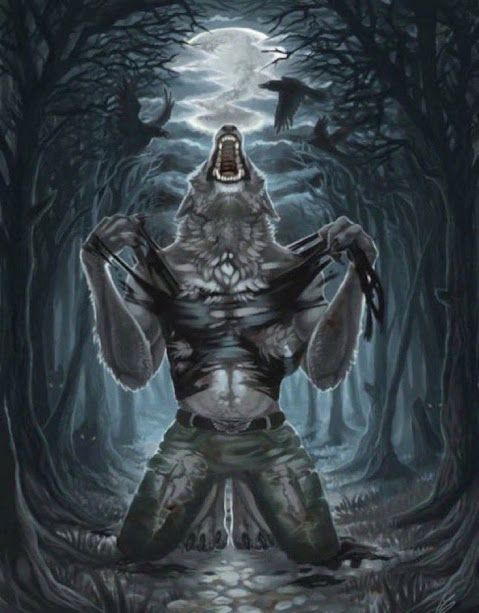
A função de levantar a arma naquela maneira não era só ter uma base de defesa para qualquer ataque de espadas (afinal, seu oponente não tem braços, muito menos armas) mas também um alcance muito mais fácil de ataque. Na posição que estava teve tempo suficiente para perceber o retesar dos músculos do cão, e seu salto despreocupado. A impulsividade sempre era a maior causa das mortes.
No pulo do predador, tinha um angulo mais que perfeito. Era só uma estocada, no momento certo e usando da força do quadril, e a lâmina se fincaria direto no estômago do animal. Não precisava nem usar as duas mãos, a outra segurando a parte de trás do cabo, seu pé empurrando contra a neve para manter-se firme. Não piscou. No momento que o Carniceiro fosse atingir seu braço, talvez alguns instantes antes, tensionou o músculo e atacou.
A sua espada não era feita para perfuração, mas com forte suficiente, tudo podia ser uma lançacom forte suficiente tudo podia ser uma lança. E naquele momento não era só a força de Armis que contava, e também da gravidade; pois o Carniceiro pulava direto na lâmina, para seu próprio desastre.
O cão tomou a estocada como quem pula para a própria miseria por realmente querer. Era inegável que a cena até dava um pouco de pena, pois quando foi atingido soltou um gemido esganiçado, deslizando da lâmina logo em seguida até a neve gélida, sem forças suficiente para se levantar. Soltava grunhidos machucados, o sangue de seu ferimento começando a escorrer na neve branca.
Era melhor que deixasse o canídeo por lá, de qualquer forma. Carne de carniceiro é amarga e dizem que é mal presságio, embora seja muitas vezes um prato bom para quem está morto de fome de verdade. O cão ofegava, sendo deixado para apodrecer. De qualquer jeito a cadeia alimentar de Faspasol era ríspida e rápida, então não demoraria para que seu cadáver se transformasse em alimento para outros predadores. Era uma visão pútrida da vida, mas era assim que as coisas funcionavam. Ninguém vive o suficiente no deserto gelado para contar muita história.
Armis respirou fundo, deixando seus músculos relaxarem com um sorriso. Quase havia esquecido o calor e a adrenalina da batalha, com a viagem inteira que tivera que fazer. Deixou a espada novamente em sua bainha, olhando ao redor com cuidado. Devia ter trazido um frasco, ou caneca, para guardar o sangue do cão. Não era melhor qualidade, sangue metamorfo, mas era uma solução melhor que usar o próprio. Se ajoelhou ao lado do corpo, sujando suas mãos com seu sangue sem prestar muita atenção. Fechou os olhos, inalando fundo e sentindo o líquido úmido escorrer por sua mão.
O sangue escorreu, manchando as mãos de Armis e o vidro em que era armazenadovidro??. Sangue metamorfo é escuro e tem um cheiro mais forte que sangue normal. É tão metálico e abundante que pode anunciar para uma área inteira que é hora da refeição. O carniceiro ainda murmurava, sentindo a dor excruciante de sua queda e seu machucado, agonizando em quase silêncio. Seus olhos encaravam com dor e angústia para seu predador, mas acima de tudo, raiva. Seria uma morte lenta.
O quão mais rápido Armis saísse de perto do cheiro exarcebado do cão, menos problemas teria.
Armis sentia o sangue escorrendo por seus dedos, e fechou os olhos. Era úmido e gelado, refrescante. Sentira a falta disso 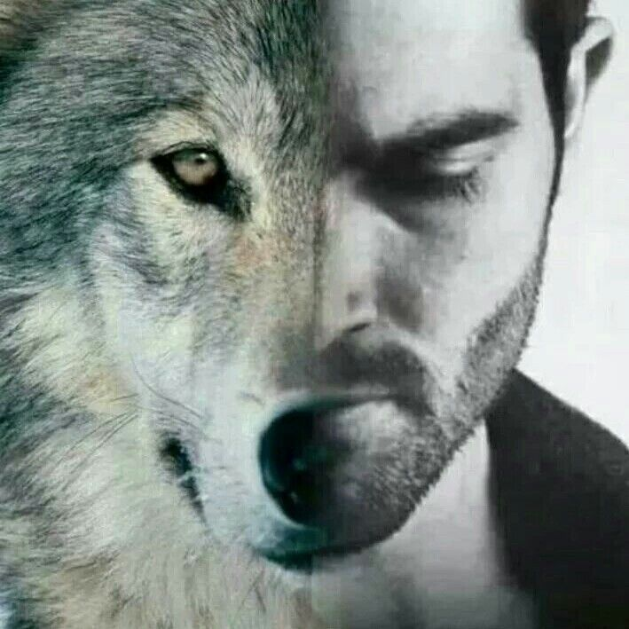
"Boa ida, Cão."
Afagava um pouco seu pelo, como se se despedisse. Não costumava fazer isso. Inimigos eram só inimigos, mas eram humanos - eram humanos e eram racionais suficiente para poderem ter escapado de seu destino. Com animais era diferente. O tirou de seu sofrimento com uma apunhalada em seu coração (ou onde achava que era o coração), se levantando e deixando o sangue em sua espada ao colocá-la na bainha.
"Pf, acho que já deu."
Diz para si mesmo, bufando ar frio e caminhando de volta por onde vinha (sorte dele que tinha feito um rastro na neve, (caso contrário provavelmente não saberia o caminho de voltatemos aqui o cavaleiro mais capaz de faspasol).
[O carniceiro pôde descansar em paz, a última facada em seu coração dando um fim á uma morte tortuosa e lenta, quando o sangue bombeado não fosse o suficiente para manter nem cérebro nem pulmão ativos. A fraqueza lhe aturdia o corpo e a dor excruciante não permitia movimentos bruscos, fazendo o definhar rapidamente, banhado em seu próprio sangue.]
[De volta ao caminho da neve, tudo era ríspido. A neve que atingia o metal, atingia o chão e atingia as árvores - que logo desapareceram, dando espaço para as figuras montanhosas e a planície deserta e branca como leite puro. Se não fosse perigoso, talvez algum dia se tornasse bonito. Se a neve perene não guardasse tão bem seus segredos, talvez. Um quadro bastaria. Um grande e com pinceladas ásperas e gélidas. Do céu só via o negrume e as constelações, e do ar só se via a fina poeira de neve que percorria ao pé da orelha fazendo chiado.]
Caverna, Noite 2
[Armis voltou para a caverna algumas horas depois, exausto.]
De dentro da caverna, Úzou se levantara de supetão ao ver o homem de armadura a qual tinha esquecido por alguns milésimos que existia. Tanto tempo sozinho, e ainda é definitivamente estranho sentir mais alguém ao seu lado. De qualquer modo, não se apavorou, respirando fundo e aliviando a coluna para voltar ao seu sono.
Talvez fosse difícil de perceber enquanto estava com tantos panos e roupas o cobrindo, mas Úzou tinha lá seus encantos. Aconchegado por uma coletânea ilustre de cobertores, já não tinha a maioria da armadura e roupas que normalmente usava, no máximo uma camisa de malha e uma calça. Deixando à mostra agora a pele cinza-claro, os cabelos escuros debruçados nas suas costas e o fino suspiro que soltava ao respirar profundamente no sono. Dormia como um doce, um jovem, uma beleza intocada dentro de seu espaço inalcançável de suavidade e sonhos.
"Voltei."
Chama para ninguém em específico, já que Úzou dormia, relaxando os músculos ao redor do fogo e tirando os restos da armadura. Era estranho, fazer isso. Era como se o capacete fosse parte de si. Deixou sua espada, Aegis, no chão, espreguiçando-se e ouvindo o estalar dos ossos. Desfez o ritual novamente que escondia seus chifres e (quase imperceptíveis) escamas, se deitando na própria caminha e encarando o teto.
"Boa noite, Semelhante."
Murmurou, sem fechar os olhos, mesmo achando que não haveria resposta.
Úzou só murmurou entre grunhidos como resposta, se misturando ao cobertor de sua cama. Conforme a noite passava o ar da nevasca lá de fora diminuía, se transformando em uma brisa gélida e ríspida somente. A fogueira teve suas chamas diminuídas consideravelmente e já era hora de achar mais lenha para acendê-la.
Caverna, Dia 3
[Os dois andarilhos dormiram através da noite fria. O frio não cedeu.]
Úzou já tinha planejado arrumar as coisas e bater em retirada para uma região mais quente há alguns dias atrás. O inverno chegaria a qualquer momento e não queria participar dele em Faspasol. Sua mochila já estava empacotada - tinha aproveitado quando Armis tinha saído para arrumá-la - e a única coisa que faltava era seu saco de dormir. De resto, o que ficasse na caverna poderia ser recuperado. Lembrava-se bem que o trajeto até o lugar onde queria ir demorava em torno de 1 a 2 dias. Mas tinha certeza de que seria inóspito viajar por 2 dias seguidos sem descanso, por experiência própria. Então o trajeto era ir até a caverna habitável mais longínqua que conseguissem, descansar e voltar a viagem. Com tudo isso em mente, Úzou tinha uma missão: Acordar cedo. E foi o que fez, rabugento e preguiçoso de sono, mas o fez. Arrumou o saco de dormir e cobertores e pôs junto a mochila. Preparou uma refeição para ele e Armis comerem antes de sair, buscou mais uma pouca lenha para esquentar-se antes de voltar a neve, e finalmente se sentou, esperando quando Armis iria acordar para contar-lhe dos objetivos.
Armis dormiu por um tempo. Não roncava, só se movia de vez em quando para mudar de lado ou murmurar alguma palavra. Era óbvio que não estava acostumado a dormir sem a runa de sangue 'furtando' seus chifres, do jeito que mantia a cabeça em uma posição esquisita e provavelmente acabaria acordando com um torcicolo daqueles.
"Hm...?"
Quando acordou, já passava do meio-dia. Passou as mãos nos olhos, momentaneamente tonto, tateando por seu capacete.
Úzou Repousando com as costas arqueadas sobre a mochila, Úzou tinha adormecido ao esperar por Armis. A brasa da fogueira agora era pouca, se misturando entre cinzas velhas e recém queimadas. O capacete de Armis, caído em sua mão - pensou que não haveria problema de roubá-lo um pouco para analisar com seus olhos.
O sono era leve, então acordou solícito quando ouviu o grunhido do semelhante, esfregando os olhos e lentamente se levantando de volta.
"Bom-dia."
Resmungou, esticando os braços para se espreguiçar com um bocejo. Empurrou o cobertor para o lado e se levantou, passos ligeiros e preguiçosos na direção da fogueira. Olhava de canto de olho para Úzou, que segurava seu capacete por algum motivo. Sorriu para si mesmo, ouvindo, desviando o olhar e ouvindo a própria barriga roncar.
"Fez café?"
"Bomm-diaa....!"
Úzou estava com a voz rouca de sono, os olhos ainda meio marejados de sua soneca, mas, acima de tudo, parecia estar com um humor excelente. Finalmente de pé, se aproximou de Armis, procurando seu olhar enquanto entregava seu capacete. Estava tão de pertinho que pôde perceber a diferença de altura que tinha com o companheiro. Que tipo de comida davam naquele exército? De qualquer modo, sentiu uma pontada de inveja de sua altura.
"Fiz, mas já deve estar frio. Inclusive, precisamos conversar."
"Conversar? Ih. Isso não parece bom."
Armis fez careta, se sentando ao lado de Úzou para tomar um pouco do café frio. "Ter que conversar" nunca significava nada bom, mais ainda tão cedo de manhã. Bocejou mais uma vez, apoiando seu queixo na palma de sua mão, que por sua vez tinha o cotovelo apoiado no joelho. A outra passava por seu cabelo bagunçado.
"Nada demais."
Esticou sua coluna para alcançar um pedaço de papel antigo, largado perto da mochila e que até agora parecia só servir para alimentar o fogo. E de perto, era possível enxergar os detalhes e letras entalhados no papel. Paisagens gigantescas pontilhadas, nomes de nações e pequenas ilhas das redondezas. O mapa ia da ponta mais ao norte de Faspasol até a ponta mais ao sul de Hu'Gling. De canto do papel uma rosa dos ventos, e algumas instruções cartográficas em letras pequenas. Úzou enxugou um dos olhos com a mão antes do acender de suas pupilas chamarem atenção. O fogo bruxuleava inquieto enquanto ele resmungava baixinho.
"É um pouco grande demais, esse mapa. Mas a questão é: logo começa o inverno, e não é boa ideia ficar tão perto do deserto de gelo. Por isso, planejei uma viagem curta até um lugar mais habitável, a floresta de Eulen. Ainda é fria, mas não tanto quanto Faspasol é. Sempre passo os dias frios lá."
Virou o mapa para Armis, sem noção se ele sabia ler, mas apontava para o nome do local onde estavam e logo depois para onde iriam.
"O solstício de inverno é daqui uma semana, então se formos rápidos, chegaríamos a tempo de escapar de algumas nevascas. Mas precisamos ir, tipo, agora. Tem problema? Tem uma venda aqui perto e pensei em comprar uns equipamentos pra você. Devo ter deixado uma lista em algum lugar..."
Virou o corpo para encontrar a lista embaixo da mochila, vagando os olhos entre nomes de pertences básicos para sobrevivência.
"Mhm."
Armis ouvia com atenção, escorando o queixo na mão, encarando Úzou. Não o mapa, não o que ele apontava, não. Seus olhos. Pareceu sair de um transe quando ele se virou para buscar algo em sua mochila, chacoalhando a cabeça como se para se recompor.
"Ah... claro."
Tinha pegado poucas palavras do que Úzou falara, mas soava como uma aventura. Armis toparia. Abaixou os ombros, cenho franzido e mordendo o lábio inferior, cabeça inclinada, tentando ver o que ele pegava na mochila.
Tateara com as mãos mais de um terço da mochila para encontrar a lista, amassada, num cantinho. Alcançou-o com um dos braços para Armis - até de longe era possível ver a ponta de seus dedos gelados. Tinha tirado as luvas grossas para conseguir manusear um lápis de um jeito não tão imbecil, e agora o tom cinzento de suas mãos era possível de se ver. O olhar ainda tinha ficado um pouco preso na mochila, enquanto terminava de fechá-la. Depois se virou completamente.
E acidentalmente bateu os olhos com os olhos de Armis. O que talvez não fosse nada demais para qualquer outra pessoa que não fosse Úzou. Mas para ele, era algo perigoso. Aprendera, depois de um tempo com sua condição, que alguns segredos não precisam ser revelados, não precisam ser de conhecimento de Úzou. Nunca usava sua habilidade com desconhecidos que julgava serem só civis, e quando tinha de usar, não os olhava diretamente, sempre escapando e vigiando qualquer outra coisa. Olhar nas pupilas de outro alguém, então, era quase como vasculhar um pouco de seu interior. Tinha demorado para desviar dos de Armis mais que o usual, porque sentia que estava irremediavelmente preso á eles, naquele instante. Mas logo olhou para o chão, quase soando como se estivesse envergonhado. Engoliu em seco, formando um sorrisinho, e deu uma risadinha nasal enquanto levantava o olhar novamente, agora sem bruxuleio de chamas, para Armis.
"...Tagarelei demais, né? Você.. entendeu alguma coisa?"
O papel que entregara continha uma lista de itens essenciais para que Armis sobrevivesse bem no inverno. No rodapé tinha o preço estimado. Úzou não sabia se ele sabia ler, mas entregara de qualquer modo.
Os olhos de Armis pareciam presos nas chamas que bruxuleavam nos de Úzou, como se congelasse no tempo cada vez que encontrava-os. Chacoalhou a cabeça quando ele desviou os olhos, pegando o papelzinho sem prestar muita atenção, mas não olhava para ele.
"Eu- que? Não importa. Não entendi não, tava distraído."
Respondeu. Ainda estava distraído. Piscou algumas vezes, pigarreando com um sorriso envergonhado. Para de encarar ele, seu idiota!
"Acabei de acordar. Mas deixa. Eu topo."
Finalmente se levantou, dando um sorrisinho complacente e rindo baixo com o quão distraído Armis estava. Deixou as coisas todas prontas, então agora estava arrumando o que o parceiro tinha deixado para trás ao dormir. Logo encontraria uma boa mochila para ele, mas por enquanto, teria de carregar suas coisas na mão. As brasas já tinham se extinguido e deixaria-as ali mesmo, caso outro viajante estivesse querendo acendê-las.
"Muito bem, então. Agora é seguir viagem até os comerciantes."
Caminhou até Armis, estendendo-lhe a mão para levantar. Infelizmente, estava com o turbante cobrindo sua boca, então o semelhante não poderia enxegar seu sorrisinho travesso.
Armis já teve sua própria experiência com jornadas longas na neve, mas normalmente eram acompanhadas de um silêncio tenso, um tambor, um marchar. Isso era... novo. A conversa fiada, companhia agradável. Não era ruim, de jeito nenhum. Era diferente. Simples. Não botou o capacete de volta, não quando a neve e a solidão das montanhas o protegia de olhos que não fossem os azuis de Úzou.
Vilarejo, Dia 3
[A vila era um ponto de parada comum para viajantes e mercadores.]
[Se tratava de um pequeno porto perto de um lago agora congelado. Marcava o fim do deserto gélido.]
Nunca fora da cidade, se colava a Úzou feito um filhote perdido, parecia seu guarda. Um homem de armadura branca com neve e espada na bainha seguindo um semelhante encapuzado. Uma visão peculiar, mas não incomum em terras tão diversas como Faspasol.
"Olha, talvez seja uma péssima hora pra admitir isso,"
Falou, um sussurro, até as paredes tinham ouvidos naquela cidade de olhos tortos e vendedores com adagas.
"Mas eu não ouvi nada que tu disse sobre o plano, e não sei o que a gente tá fazendo aqui."
Era uma pena que usava capacete, tinha certeza que Úzou riria da careta que fizera. Realmente não sabia o que vieram comprar, só se mantera aos calcanhares do semelhante. Alguma coisa alguma coisa sair de Faspasol, Armis não fazia ideia, e honestamente não ligava muito se tivesse companhia boa. Agora que conhecia esse conceito, não deixaria-o escapar tão fácil.
Afiou a feição quando olhou para Armis, obviamente desapontado. Abaixou o pano que cobria a boca com o indicador, e prosseguiu para falar num sussurro quase inaudível.
"Comprando coisas pra você viajar comigo."
A correria, a fumaça que se condensava e esvaía no vento frio, as velas quentes e o povo do vilarejo que carregava crianças agasalhadas e gritava por freguesia.
Ele, na verdade, se sentia indubitavelmente mal. O mundo que Armis vivia realmente era tão terrível? A realidade era mesmo tão diferente, a ponto de que um vilarejo comum de Faspasol — um dos poucos — poderia fazê-lo se sentir tão desconfiado? As famílias que ali viviam eram tão comuns quanto poderiam. Uma espécie de refúgio aconchegante dentro da neve densa. Não era à toa que Úzou, que conhecia cada canto da planície, escolhera comprar justamente dali. Suspirou e, cansado de rastejar pelas feirinhas, puxou Armis pelo antebraço, para o comerciante que realmente importa.
A comoção das outras lojas parecia longe demais quando entraram na pequena cabana de Nae'thu, comerciante de gestos rudes e cara de monstro. Úzou se desvencilhou de Armis — hesitante, mesmo desconhecendo o motivo. Acenou com a cabeça para o vendedor. Sem dirigir qualquer palavra, entregou-lhe uma lista extensa e o comerciante se prontificou a rapidamente buscar os produtos na despensa. Úzou virou para o semelhante, ainda evitando seus olhos, e desamassou um papel que tinha tirado do bolso.
"É... Certo, vou te explicar de novo. Vamos pra um lugar que é menos frio que Fapasol, pra passar o inverno. É longe, e temos uma semana até o solstício, então você precisa de umas coisas boas pra viajar. Entendeu? Vamos passar a noite na casa de um conhecido aqui na vila."
Armis não se importou em disfarçar seu desconforto, na verdade, não tinha certeza que saberia como. Mantinha-se ombro a ombro com Úzou, olhar saltando de pessoa em pessoa, dedos mexendo ansiosos contra uns aos outros.
Se manteve na porta da loja após ser abandonado ali, acompanhando os movimentos do semelhante, apoiado na parede. Não conseguia achar nada de valor pra fazer, seus instintos começando a gritar no momento que pisou no vilarejo.
Encarou um pouco para cima como se raciocinasse.
"Com que dinheiro?"
Perguntou, porque não acreditava muito que um eremita aleatório das colônias tinha muitas riquezas em seu nome, e a única coisa de valor que Armis tinha era sua armadura e espada.
Era um destino, pelo menos; achar um lugar quente. E um destino era muita coisa para quem nunca teve um. Não tinha certeza de nada ainda, céus, nem conhecia Úzou direito, percebeu. Talvez estivesse sendo enganado, tinha ouvido histórias de imortais trocando de hospedeiro por toda eternidade, ouvido histórias de exércitos que velejaram na direção do sol e nunca mais voltaram.
Ouvira tantas, tantas histórias que lhe aconselhavam a não fazer exatamente o que fazia. Mesmo assim, se não fosse isso, então seria vagar sozinho por Faspasol novamente, sentindo falta do único semelhante que jamais considerara companhia. O menor de dois males, ou algo do tipo.
Tirou as luvas na tentativa de manusear suas anotações com um pouco mais de maestria e as guardou desajeitadamente no bolso oculto do xale que usava. Seu sotaque soou incorrigível, esboçando um sorrisinho complacente.
"Acha que eu fiquei parado vagando por aí esse tempo todo?"
Conforme pôde se esquentar, as chamas de seus olhos cresciam, embora preferisse que elas estivessem calmas novamente. Gostava bastante de sua habilidade — não era qualquer coisa: ver os semelhantes como são, translúcidos, sem facetas, é algo bastante cativante nesta região. Mas queria guardar as facetas de Armis um pouco mais. Queria descobri-lo sem trapaças.
Há algum tempo, era mais fácil regular a potencialidade do fogo. Se Úzou se recorda bem, as chamas começaram a desobedecê-lo ao mesmo tempo que as noites brancas e febris surgiram.
Seus devaneios foram dissipados ao ouvir os passos de Nae'Thu de volta à bancada, pondo uma mochila de apetrechos na frente de Armis. Cumprimentou-o com a cara fechada e voltou-se para o outro. Úzou levantou a manga comprida do xale em cima da bancada e deslizou algo até o vendedor, junto de um papel pequeno e dobrado, com a outra mão.
O vendedor levantou levemente as sobrancelhas e apertou firme as mãos do semelhante.
"Omnia recte?"
Nae'Thu questiona-o. Com um sorriso amarelo, responde:
"Cum illa quaestione iterum."
O vendedor suspira e se vira, agachando-se até uma tábua solta. De lá, tira uma pequena caixa de metal — difícil para Armis enxergar. Suas mãos grotescas retiram um frasco frágil de dentro e Úzou o agarra sem hesitar, rápido em guardar o recipiente. Acenou positivamente e voltou-se para o companheiro.
"Vamos?"
Hu'gling, ???
[Uma lareira fraca queimava no canto da cabana, espalhando uma luz tremeluzente sobre as paredes de madeira. Jovens morenos se amontoavam no chão, olhavam de olhos arregalados para a figura entre eles.]
[Era um homem de idade avançada, de ombros curvados e mãos grossas, marcadas por anos de trabalho. Sua voz era rouca, carregava peso.]
"... Olha só, está tarde."
[As crianças protestaram. Exigiram uma continuação.]
"O que acontece depois?! Onde eles vão?"
[O vô riu, balançou a cabeça. Levantou e recolheu seus pertences.]
"Eu conto mais amanhã. Vamos, vamos, é hora de dormir..."